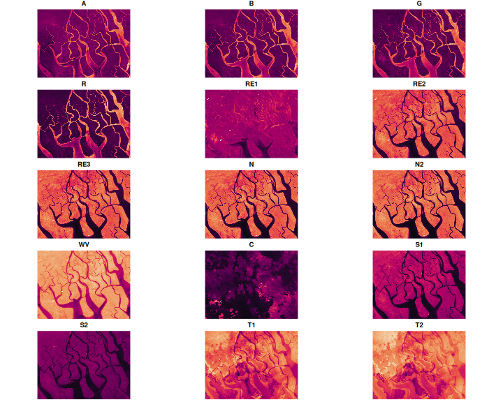

Introduction
The Harmonized Landsat Sentinel-2 (HLS) project is fantastic dataset offering global, harmonized surface reflectance data from Landsat 8 and Sentinel-2 satellites. The combined measurement enables global observations of the land every 2–3 days at 30-meter (m) spatial resolution. The data has a high quality cloud/shadow bitmask layer, enabling the creation of excellent cloud-free composites. Further information on HLS can be found at the following links:
Combining the Harmonized landsat and sentinel collections does require some additional work because the two collections have different numbers of bands with different names.
This Vignette outlines a workflow to combine the two collections into a single median composite image that maintains all available bands.
You will need to have an Earthdata account to access the HLS data. You can create an account at https://urs.earthdata.nasa.gov/users/new.
Workflow setup
First we load the vrtility package and set up our
multiprocessing daemons using the mirai package. Using
mirai daemons allows for the automated speed up of several of the
vrtility processing steps.
Next we define our area of interest, we do this using the
gdalraster package but you can as easily simply provide a
numeric vector (length 4) with lon/lat coordinates ordered by xmin,
ymin, xmax, ymax.
When working with any raster data it is often more convenient to use
a projected coordinate system. The bbox_to_projected
function provides a convenient way to reproject a bounding box, either
with a specific spatial reference system (SRS) or using a default SRS
appropriate for the area of interest. The default SRS is an equal area
projection centered around the centroid of the bounding box.
library(vrtility)
mirai::daemons(gdalraster::get_num_cpus())
bbox <- gdalraster::bbox_from_wkt(
wkt = "POINT (144.3 -7.6)",
extend_x = 0.17,
extend_y = 0.125
)
te <- bbox_to_projected(bbox)
trs <- attr(te, "wkt")Now we need to find the data. we need to query both the HLS Landsat
and Sentinel-2 collections. The hls_stac_query function
provides a convenient way to do this. First we will query the HLS
Landsat collection. Here we set a maximum cloud cover of 35% and a date
range of 2023-01-01 to 2023-12-31. we can see that of a total of 70
images, only 6 had less than 35% cloud cover.
hlssl_stac <- hls_stac_query(
bbox = bbox,
start_date = "2023-01-01",
end_date = "2023-12-31",
max_cloud_cover = 35,
stac_source = "https://cmr.earthdata.nasa.gov/stac/LPCLOUD/",
collection = "HLSL30_2.0",
assets = c(
"B01", "B02", "B03", "B04", "B05", "B06", "B07", "B09", "B10", "B11", "Fmask")
)
print(hlssl_stac)
#> ###Items
#> - features (6 item(s)):
#> - HLS.L30.T55MBM.2023017T003226.v2.0
#> - HLS.L30.T54MZS.2023017T003226.v2.0
#> - HLS.L30.T55MBM.2023065T003210.v2.0
#> - HLS.L30.T54MZS.2023065T003210.v2.0
#> - HLS.L30.T55MBM.2023337T003219.v2.0
#> - HLS.L30.T54MZS.2023337T003219.v2.0
#> - assets: B01, B02, B03, B04, B05, B06, B07, B09, B10, B11, Fmask
#> - item's fields:
#> assets, bbox, collection, geometry, id, links, properties, stac_extensions, stac_version, typeAnd now we will query the HLS Sentinel-2 collection using the same parameters. Again we can see that < 10% of images have less than 35% cloud cover.
hlsss_stac <- hls_stac_query(
bbox = bbox,
start_date = "2023-01-01",
end_date = "2023-12-31",
max_cloud_cover = 35,
stac_source = "https://cmr.earthdata.nasa.gov/stac/LPCLOUD/",
collection = "HLSS30_2.0"
)
print(hlsss_stac)
#> ###Items
#> - features (8 item(s)):
#> - HLS.S30.T54MZS.2023029T004701.v2.0
#> - HLS.S30.T55MBM.2023074T004709.v2.0
#> - HLS.S30.T55MBM.2023079T004701.v2.0
#> - HLS.S30.T55MBM.2023109T004701.v2.0
#> - HLS.S30.T54MZS.2023109T004701.v2.0
#> - HLS.S30.T55MBM.2023319T004701.v2.0
#> - HLS.S30.T55MBM.2023364T004709.v2.0
#> - HLS.S30.T54MZS.2023364T004709.v2.0
#> - assets:
#> B01, B02, B03, B04, B05, B06, B07, B08, B09, B10, B11, B12, B8A, Fmask
#> - item's fields:
#> assets, bbox, collection, geometry, id, links, properties, stac_extensions, stac_version, typeIn order to download the data we need to set up our Earthdata credentials. The simplest way to do this is with the earthdatalogin package. But, because we are using asynchronous mirai daemons, we need to set the credentials for all daemons.
mirai::everywhere(
earthdatalogin::edl_netrc(
username = Sys.getenv("EARTHDATA_USER"),
password = Sys.getenv("EARTHDATA_PASSWORD")
)
)Now we can begin forming the VRT pipeline. Here we “collect” all of the assets from the STAC collections. This is essentially just a list of virtual rasters. This can take a little time due to VRT validation - however, GDAL caching makes re-accessing these remote files faster, for the subsequent parts of the workflow.
hls_sl_col <- vrt_collect(hlssl_stac)
print(hls_sl_col)
#> → <VRT Collection>
#>
#> VRT SRS:
#> PROJCS["WGS 84 / UTM zone 55N",GEOGCS["WGS 84",DATUM["WGS_1984",SPHEROID["WGS 84",6378137,298.257223563,AUTHORITY["EPSG","7030"]],AUTHORITY["EPSG","6326"]],PRIMEM["Greenwich",0,AUTHORITY["EPSG","8901"]],UNIT["degree",0.0174532925199433,AUTHORITY["EPSG","9122"]],AUTHORITY["EPSG","4326"]],PROJECTION["Transverse_Mercator"],PARAMETER["latitude_of_origin",0],PARAMETER["central_meridian",147],PARAMETER["scale_factor",0.9996],PARAMETER["false_easting",500000],PARAMETER["false_northing",0],UNIT["metre",1,AUTHORITY["EPSG","9001"]],AXIS["Easting",EAST],AXIS["Northing",NORTH],AUTHORITY["EPSG","32655"]]
#>
#> PROJCS["WGS 84 / UTM zone 54N",GEOGCS["WGS 84",DATUM["WGS_1984",SPHEROID["WGS 84",6378137,298.257223563,AUTHORITY["EPSG","7030"]],AUTHORITY["EPSG","6326"]],PRIMEM["Greenwich",0,AUTHORITY["EPSG","8901"]],UNIT["degree",0.0174532925199433,AUTHORITY["EPSG","9122"]],AUTHORITY["EPSG","4326"]],PROJECTION["Transverse_Mercator"],PARAMETER["latitude_of_origin",0],PARAMETER["central_meridian",141],PARAMETER["scale_factor",0.9996],PARAMETER["false_easting",500000],PARAMETER["false_northing",0],UNIT["metre",1,AUTHORITY["EPSG","9001"]],AXIS["Easting",EAST],AXIS["Northing",NORTH],AUTHORITY["EPSG","32654"]]
#> Bounding Box: NA
#> Pixel res: 30, 30
#> Start Date: 2023-01-17 00:32:26 UTC
#> End Date: 2023-12-03 00:32:19 UTC
#> Number of Items: 6
#> Assets: B01, B02, B03, B04, B05, B06, B07, B09, B10, B11, Fmask
hls_ss_col <- vrt_collect(hlsss_stac)
print(hls_ss_col)
#> → <VRT Collection>
#>
#> VRT SRS:
#> PROJCS["WGS 84 / UTM zone 54N",GEOGCS["WGS 84",DATUM["WGS_1984",SPHEROID["WGS 84",6378137,298.257223563,AUTHORITY["EPSG","7030"]],AUTHORITY["EPSG","6326"]],PRIMEM["Greenwich",0,AUTHORITY["EPSG","8901"]],UNIT["degree",0.0174532925199433,AUTHORITY["EPSG","9122"]],AUTHORITY["EPSG","4326"]],PROJECTION["Transverse_Mercator"],PARAMETER["latitude_of_origin",0],PARAMETER["central_meridian",141],PARAMETER["scale_factor",0.9996],PARAMETER["false_easting",500000],PARAMETER["false_northing",0],UNIT["metre",1,AUTHORITY["EPSG","9001"]],AXIS["Easting",EAST],AXIS["Northing",NORTH],AUTHORITY["EPSG","32654"]]
#>
#> PROJCS["WGS 84 / UTM zone 55N",GEOGCS["WGS 84",DATUM["WGS_1984",SPHEROID["WGS 84",6378137,298.257223563,AUTHORITY["EPSG","7030"]],AUTHORITY["EPSG","6326"]],PRIMEM["Greenwich",0,AUTHORITY["EPSG","8901"]],UNIT["degree",0.0174532925199433,AUTHORITY["EPSG","9122"]],AUTHORITY["EPSG","4326"]],PROJECTION["Transverse_Mercator"],PARAMETER["latitude_of_origin",0],PARAMETER["central_meridian",147],PARAMETER["scale_factor",0.9996],PARAMETER["false_easting",500000],PARAMETER["false_northing",0],UNIT["metre",1,AUTHORITY["EPSG","9001"]],AXIS["Easting",EAST],AXIS["Northing",NORTH],AUTHORITY["EPSG","32655"]]
#> Bounding Box: NA
#> Pixel res: 30, 30
#> Start Date: 2023-01-29 00:49:07 UTC
#> End Date: 2023-12-30 00:49:10 UTC
#> Number of Items: 8
#> Assets: B01, B02, B03, B04, B05, B06, B07, B08, B8A, B09, B10, B11, B12, FmaskThe print method for vrt_collection objects gives us a high level overview of the imagery we will download. Our collections contain images with two different SRS. We can also see that the number of bands differs across the two collections.
Now we need to align these data so that we can composite all the imagery in one go. We can do this by simply adding nodata bands where required. In the case of the HLS Landsat collection, we also need to move the position of the cirrus band to match that of the HLS Sentinel-2 collection.
Similarly, with HLS Sentinel-2, we need to add the thermal bands that
are absent, but critically, note that we need to specify the scale value
for these bands. If this isn’t provided then the scale from the first
band is used (which in this case is 0.0001) or if there is no scale, it
is ignored. Automating this is tricky but if you miss an appropriate
scale, you will see warnings when you then use
vrt_stack.
hls_ls_align <- vrt_set_band_names(
hls_sl_col,
c("A", "B", "G", "R", "N2", "S1", "S2", "C", "T1", "T2", "Fmask")
) |>
vrt_add_empty_band(after = 4, description = "RE1") |>
vrt_add_empty_band(after = 5, description = "RE2") |>
vrt_add_empty_band(after = 6, description = "RE3") |>
vrt_add_empty_band(after = 7, description = "N") |>
vrt_add_empty_band(after = 9, description = "WV") |>
vrt_move_band(band_idx = 13, after = 10)
hls_ss_align <- vrt_set_band_names(
hls_ss_col,
c("A", "B", "G", "R", "RE1", "RE2", "RE3", "N", "N2", "WV", "C", "S1", "S2", "Fmask")
) |>
vrt_add_empty_band(after = 13, description = "T1", scale_value = 0.01) |>
vrt_add_empty_band(after = 14, description = "T2", scale_value = 0.01)Now we can combine the two collections into a single collection using
the c method. This is a simple concatenation of the two
collections.
hls_merge_coll <- c(
hls_ls_align,
hls_ss_align
)Now we set the mask function required for the HLS data. The “Fmask”
band is a true bitmask (unlike other datasets which may use ineger
masks). Therefore we must use the build_bitmask function to
set the mask and can specify the bits that we wish to set as no-data
across all bands.
hls_col_mask <- vrt_set_maskfun(
hls_merge_coll,
mask_band = "Fmask",
mask_values = c(0, 1, 2, 3),
build_mask_pixfun = build_bitmask(),
drop_mask_band = TRUE
)
# let's check out a vrt and inspect the mask function that we used.
print(hls_col_mask, maskfun = TRUE)
#> → <VRT Collection>
#> Mask Function:
#> import numpy as np
#> def build_mask(in_ar, out_ar, xoff, yoff, xsize, ysize, raster_xsize,
#> raster_ysize, buf_radius, gt, **kwargs):
#> bit_positions = [int(x) for x in kwargs['mask_values'].decode().split(',')]
#> mask = np.zeros_like(in_ar[0], dtype=bool)
#> for bit in bit_positions:
#> mask |= np.bitwise_and(in_ar[0], np.left_shift(1, bit)) > 0
#> out_ar[:] = np.where(mask, 0, 1)
#>
#>
#> VRT SRS:
#> PROJCS["WGS 84 / UTM zone 55N",GEOGCS["WGS 84",DATUM["WGS_1984",SPHEROID["WGS 84",6378137,298.257223563,AUTHORITY["EPSG","7030"]],AUTHORITY["EPSG","6326"]],PRIMEM["Greenwich",0,AUTHORITY["EPSG","8901"]],UNIT["degree",0.0174532925199433,AUTHORITY["EPSG","9122"]],AUTHORITY["EPSG","4326"]],PROJECTION["Transverse_Mercator"],PARAMETER["latitude_of_origin",0],PARAMETER["central_meridian",147],PARAMETER["scale_factor",0.9996],PARAMETER["false_easting",500000],PARAMETER["false_northing",0],UNIT["metre",1,AUTHORITY["EPSG","9001"]],AXIS["Easting",EAST],AXIS["Northing",NORTH],AUTHORITY["EPSG","32655"]]
#>
#> PROJCS["WGS 84 / UTM zone 54N",GEOGCS["WGS 84",DATUM["WGS_1984",SPHEROID["WGS 84",6378137,298.257223563,AUTHORITY["EPSG","7030"]],AUTHORITY["EPSG","6326"]],PRIMEM["Greenwich",0,AUTHORITY["EPSG","8901"]],UNIT["degree",0.0174532925199433,AUTHORITY["EPSG","9122"]],AUTHORITY["EPSG","4326"]],PROJECTION["Transverse_Mercator"],PARAMETER["latitude_of_origin",0],PARAMETER["central_meridian",141],PARAMETER["scale_factor",0.9996],PARAMETER["false_easting",500000],PARAMETER["false_northing",0],UNIT["metre",1,AUTHORITY["EPSG","9001"]],AXIS["Easting",EAST],AXIS["Northing",NORTH],AUTHORITY["EPSG","32654"]]
#> Bounding Box: NA
#> Pixel res: 30, 30
#> Start Date: 2023-01-17 00:32:26 UTC
#> End Date: 2023-12-30 00:49:10 UTC
#> Number of Items: 14
#> Assets: A, B, G, R, RE1, RE2, RE3, N, N2, WV, C, S1, S2, T1, T2Now we want to “reduce” the imagery collection to a single composite
image. The typical approach would be to use the band-level median which
we can achieve easily first creating a virtual warped raster collection
using vrt_warp and then stacking the warped collection
using vrt_stack. Here we can now apply the python median
pixel function using vrt_set_py_pixelfun before computing
the final composite using vrt_compute.
# not run
band_level_median <- vrt_warp(
hls_col_mask,
t_srs = trs,
te = te,
tr = c(30, 30),
resampling = "bilinear"
) |>
vrt_stack() |>
vrt_set_py_pixelfun(pixfun = median_numpy()) |>
vrt_compute(fs::file_temp(ext = ".tif"),
engine = "gdalraster"
)However, we can also create composites using more advanced
statistical methods that can improve on the filtering of outliers,
increase scene consistency and ensure that spectral properties are
preserved. Several functions are provided in the vrtility
package to do this but the user can also provide their own if desired.
Here we will use the geomedian function which calculates
the geometric (aka spatial median). This synthetic statistic ensures
consistency across bands. Note we can also use other functions such as
medoid or quantoid, or geomedoid
to obtain different types of composite that all preserve the spectral
properties of the data.
In theory we can also just run:
# not run
hls_composite <- vrt_warp(
hls_col_mask,
t_srs = trs,
te = te,
tr = c(30, 30),
resampling = "bilinear"
) |>
multiband_reduce(reduce_fun = geomedian())But the NASA Earthdata server seems to object to multiple concurrent
reads on a single file and so this can be a bit slow. Therefore we can
download multiple files in parallel by using the “warp” engine in
vrt_compute(). This downloads all files locally - from here
we can then build the geomedian composite as above. by warping during
the vrt_compute step can align all images in the collection
to the same spatial reference system, extent and pixel size. This is
particularly important in this case because of the multiple SRS values
in the collection. note that recollect = TRUE is set to
ensure that the returned object is a vrt_collection object,
if FALSE then the multiple file paths will be returned instead.
hls_composite <- hls_col_mask |>
vrt_compute(
fs::file_temp(ext = ".tif"),
t_srs = trs,
te = te,
tr = c(30, 30),
resampling = "bilinear",
engine = "warp",
recollect = TRUE
) |>
multiband_reduce(reduce_fun = geomedian())Now let’s take a look at the composite - first RGB and then a false colour composite.
withr::with_par(list(mar = c(0, 0, 0, 0)), {
plot_raster_src(
hls_composite,
bands = c(4, 3, 2),
axes = FALSE
)
plot_raster_src(
hls_composite,
bands = c(9, 12, 13),
minmax_pct_cut = c(28, 97),
axes = FALSE
)
})And all the other bands too:
withr::with_par(
list(mfrow = c(5, 3), mar = c(0, 0, 1, 0)),
purrr::walk(1:15, function(i) {
plot_raster_src(
hls_composite,
bands = i,
col = hcl.colors(100, "Rocket"),
legend = FALSE,
axes = FALSE
)
})
)